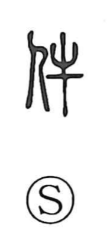

件

Uncategorized
Kun: kudari, kudan | On: ken
item ・ case ・ matter ・ passage ・ clause
Explanation
A late compound graph combining the elements for person (人) and ox (牛), 件 does not appear in the earlier oracle-bone or bronze inscriptions and comes into use from the Tang–Song period. Although the motive for pairing these components is unclear, the character is firmly attested as a technical legal term: the Criminal Law section of the Jiu Tang Shu classifies offenses by count—“over twenty 件 is large, over ten 件 is medium.” From this role as a counter for discrete cases, 件 naturally came to mean an individual item or matter, and by extension a share used in sorting or apportioning things, as well as a passage or clause in a text—one segment among many.